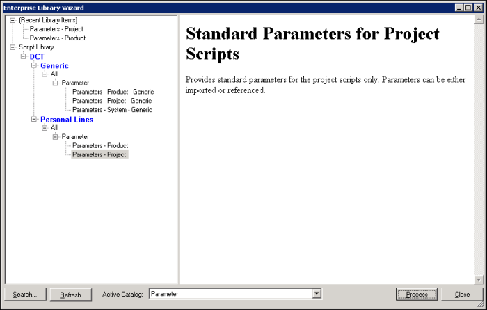
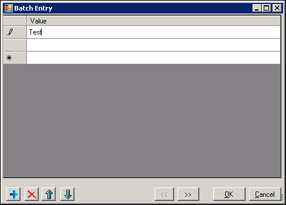

Save Page to .PDF
Save Page to .PDFThe Library Wizard in EXAMPLE Author® allows users to automate the creation and modification of insurance products. Using scripts created by the Script Editor Utility, you can create or modify:
- Premiums and coverages
- Underwriting rules
- Table data
- User interface
- Forms and print jobs
The Library Wizard only appears on the Tools Menu when the Script Editor.exe file is located in the same directory as the Author.exe file.
Using the Library Wizard, you can execute scripts created with the Script Editor utility in EXAMPLE Author®.
To execute a script in EXAMPLE Author®:
- Open an existing ManuScript or create a new ManuScript.
If you're creating a new ManuScript, you must enter catalog information.
- On the Tools menu, click Library Wizard.
The Library Wizard appears.

- In the Active Catalog dropdown list, click the desired active catalog.
- In the Script Library tree view, click the script you wish to run.
- Click Process.
The Wizard Steps dialog box appears. - Answer the required wizard questions, and then click Finish.
You can also:
• Click Technical Specification to view the parameters, groups, fields, and tables to be modified, as well as any manual steps required after the completion of the wizard.
• Click Preview Requests to view the original XSLT, the param block (with answers), and the transformed XSLT that will be created when the user clicks Finish.
Refreshing the Script Library
You can refresh the Script Library in the Library Wizard at any time to ensure that:
- All scripts that have been added to the Script Library display in the Library Wizard.
- All scripts that have been removed from the Script Library will no longer display in the Library Wizard.
- All scripts in the Script Library are the latest versions of those scripts.
To refresh the Script Library:
- At the bottom of the Library Wizard in EXAMPLE Author®, click Refresh.
The Script Library is updated with the latest scripts.
Searching for a Script
Using the Library Wizard, you can search the Script Library for a specific script file.
To search for a script file:
- At the bottom of the Library Wizard in EXAMPLE Author®, click Search.
The Wizard Search dialog box appears. - In the Search for: text box, enter the name of the script file you wish to find.
You can also select the Search in Description check box to include script descriptions in the search.
- Click Find Next until the script file you wish to find is highlighted in the Script Library on the left.
Viewing ManuScript Changes
The Library Wizard allows you to view the changes to be made to the ManuScript once all wizard questions have been answered. Using this tool, you can view information about:
- Groups added
- Fields added
- Tables added
- Items that need to be modified
- To do items
- Unknown items
To view changes to a ManuScript:
- In the LIbrary Wizard, complete all the wizard steps for a given script file.
Do not click Finish.
- At the bottom-left corner of the Wizard Steps dialog box, click Technical Specification.
The Author Wizard Information dialog box appears and displays all ManuScript changes to be made during or after script completion.
Previewing Script File Requests
You can preview a list of all the requests that will be used to accomplish the wizard steps for a specific script file.
To preview script file requests:
- In the Library Wizard, complete all the wizards steps for a given script file.
Do not click Finish.
- At the bottom of the Wizard Steps dialog box, click Preview Requests.
The Author Wizard Information dialog box appears and displays all XSLT, parameters, and requests that will be used during script completion.
Making Batch ManuScript Changes
With the Library Wizard, you can use any script file to make multiple changes to your insurance products at any time.
To use the batch functionality in the Library Wizard:
- When running a script in the Library Wizard in EXAMPLE Author®, click Batch.
The Batch Entry dialog box appears.

- In the Value column, enter the values you wish to use for the wizard step.
You can also right-click in the grid and select Paste Excel Cells Into Grid to paste copied cells to the Batch Entry dialog box.
All wizard steps containing batch entries must include the same number of entries. For example, if Step 1 contains three batch entries and you wish to add batch entries to Step 4, you must also add three batch entries to Step 4.
- Click OK.
- When all wizard questions have been answered, click Finish.
The script runs once for each answer you provided in the Batch Entry dialog box.